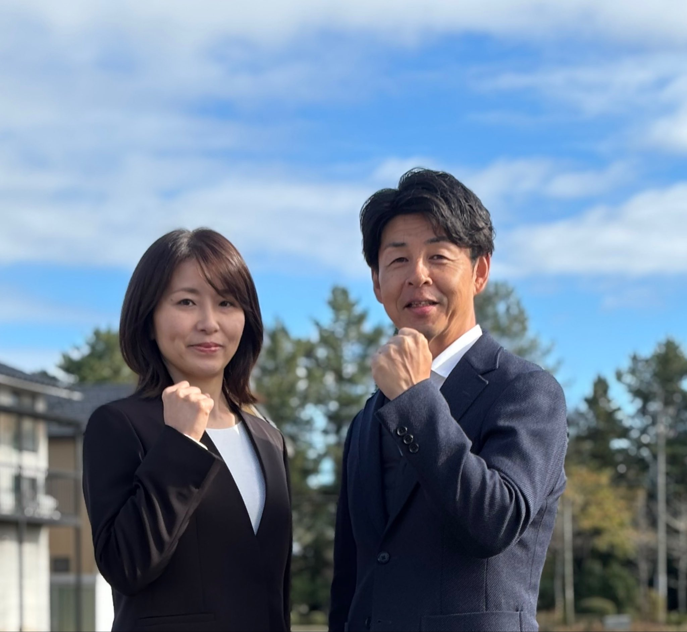
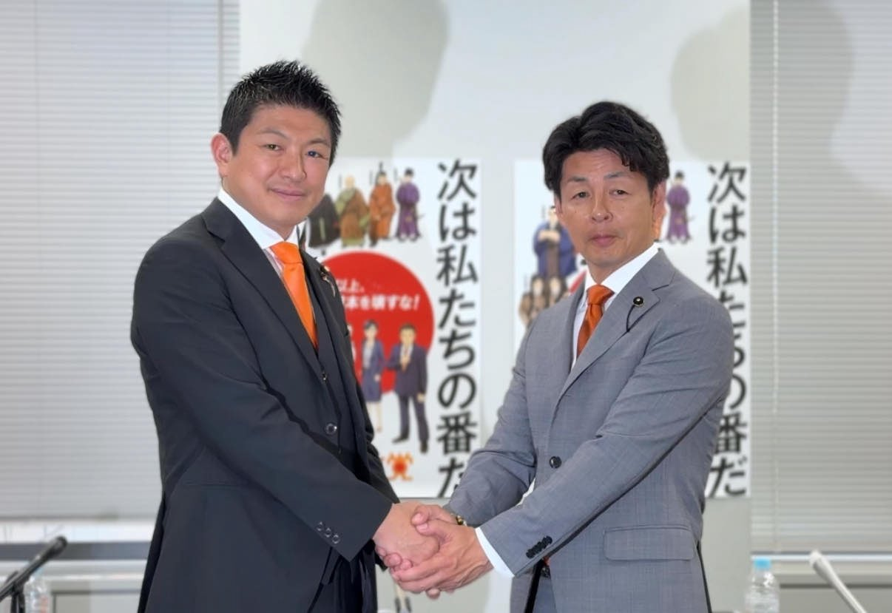
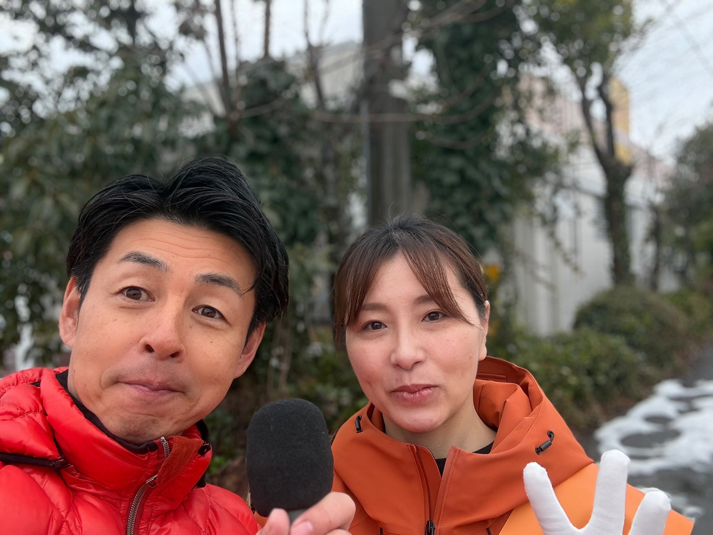
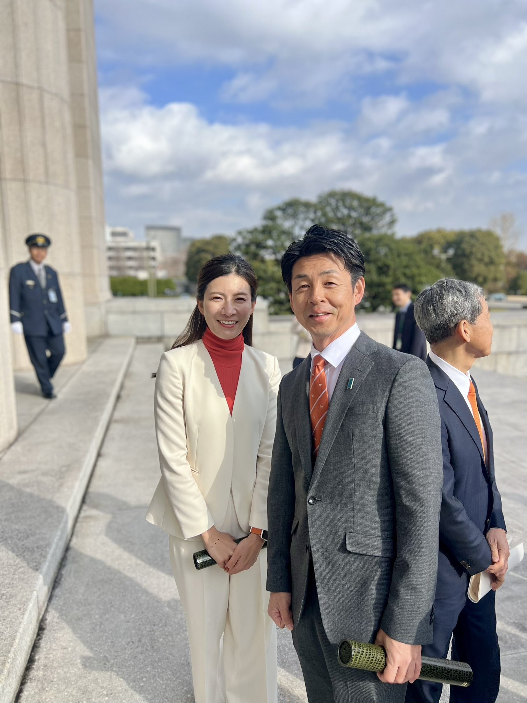
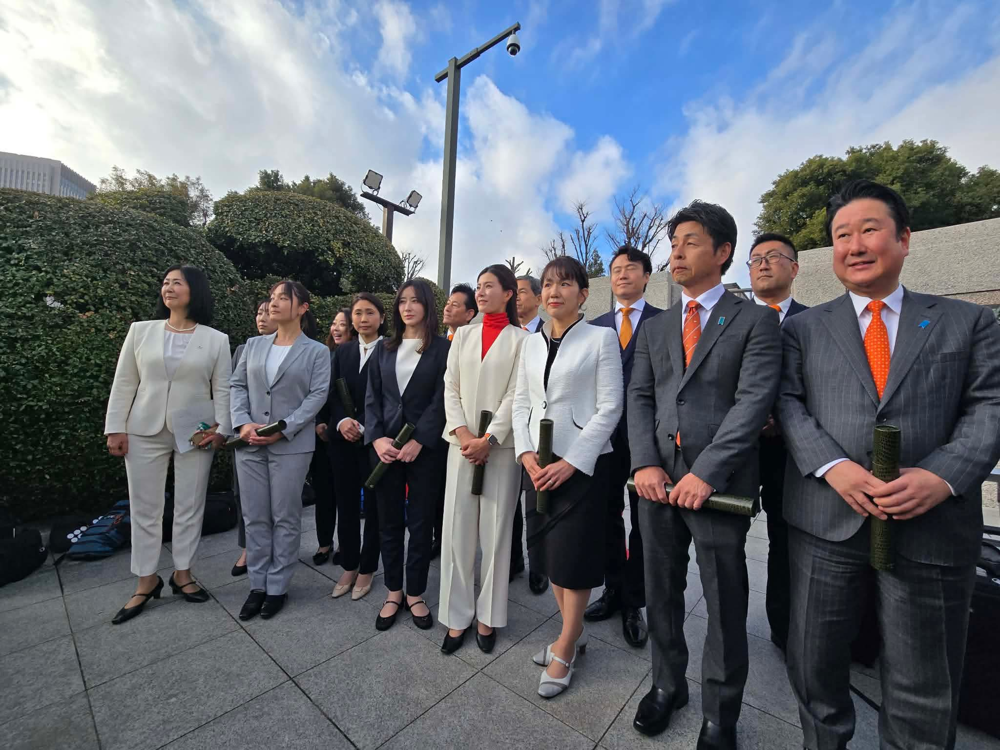
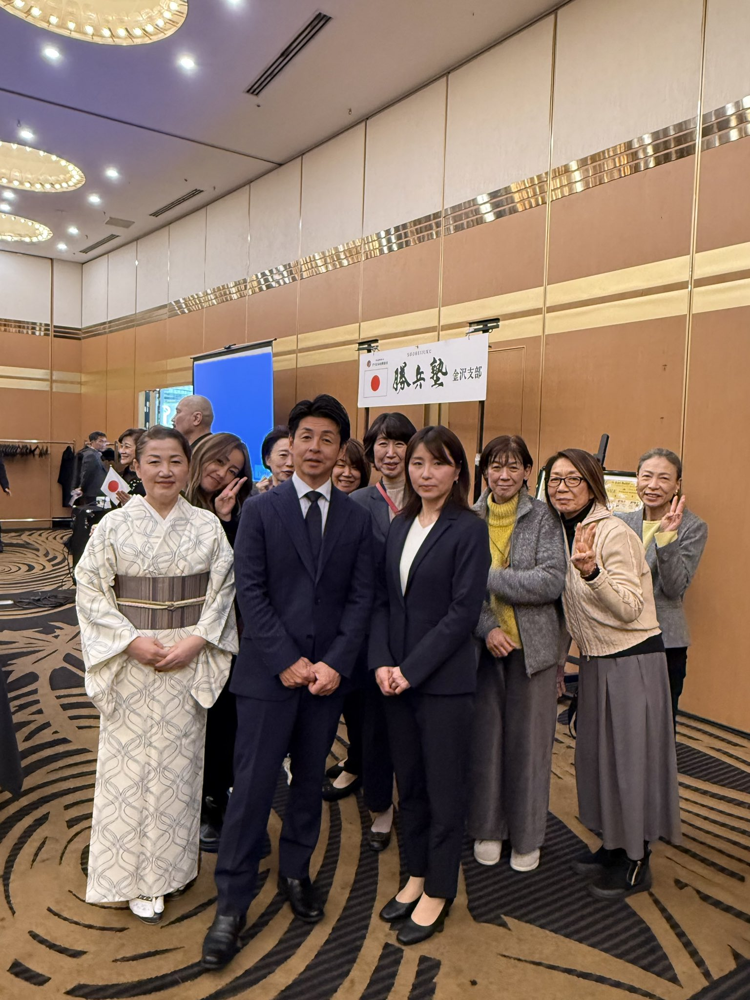
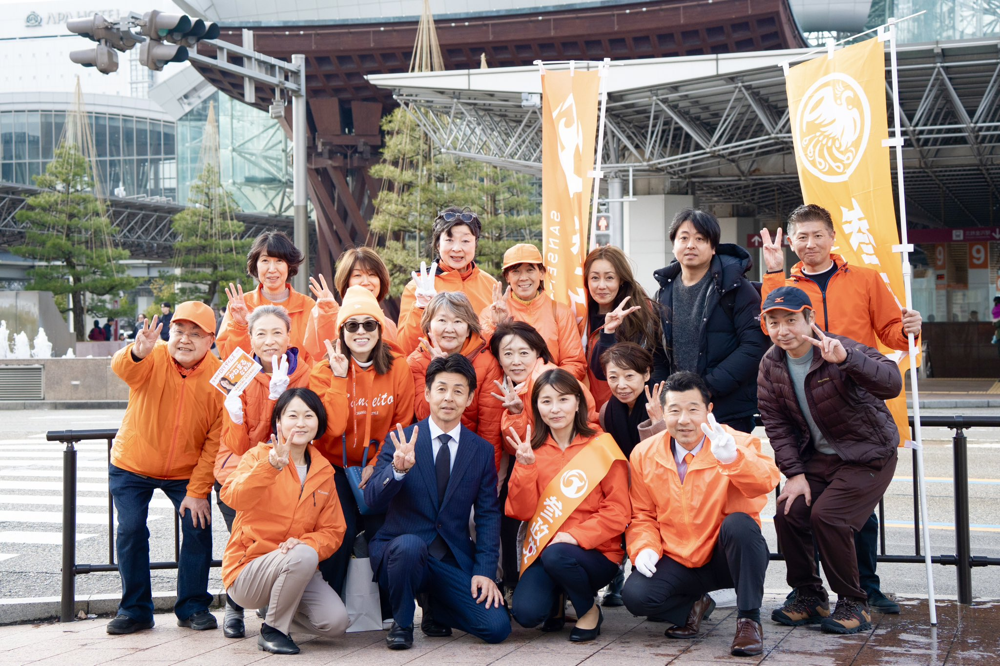
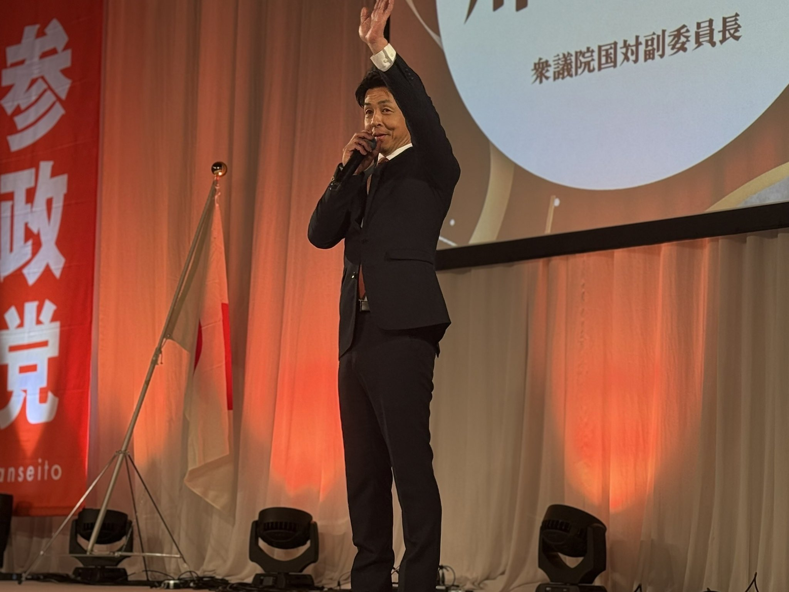
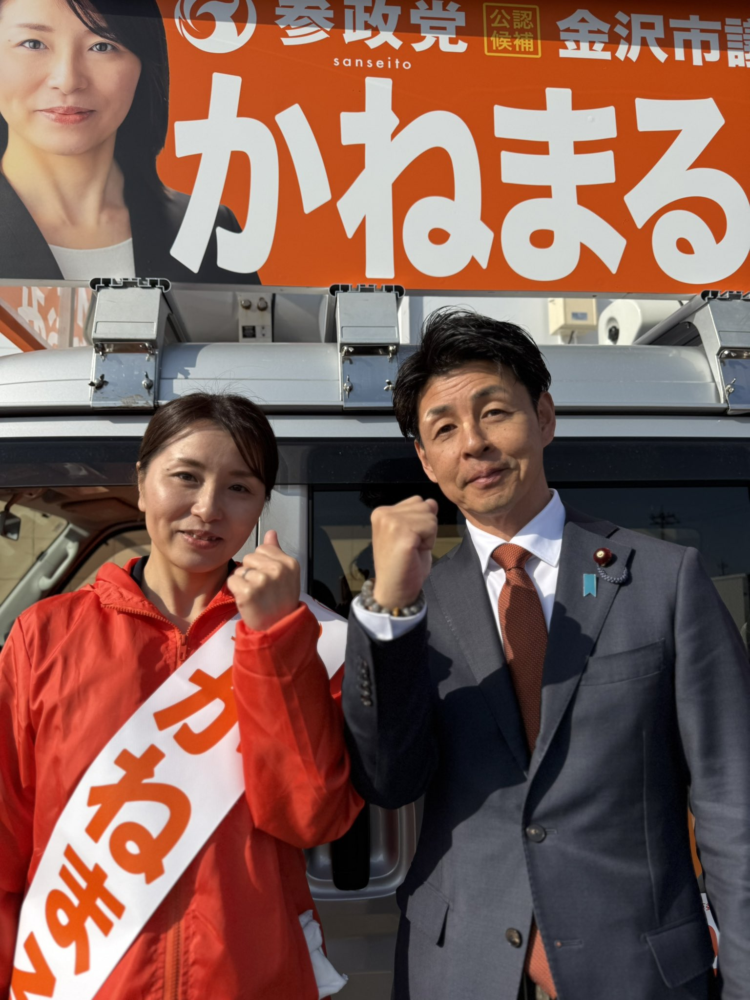

川 裕一郎
昭和46年10月27日 金沢市生まれ O型
趣味／愛犬と散歩、ゴルフ、旅行、映画鑑賞
地元企業役員を経て、弱い立場の人に光が当たらない現状を変えるため政治の道を志す。
趣味／愛犬と散歩、ゴルフ、旅行、映画鑑賞
地元企業役員を経て、弱い立場の人に光が当たらない現状を変えるため政治の道を志す。
主な役職
- 参政党石川第1区国政改革委員 / 参政党副幹事長兼副事務局長
- 救う会石川 幹事長 / 金沢市南倫理法人会会員
- 石川盛徳会会員・志命塾会員 / 崎浦地区町会連合会相談役
- 崎浦公民館運営審議委員 / 石川県日曜野球協会顧問
- 国際空手道連盟極真会館顧問 / 兼六レッドソックス顧問 etc
SNS / LINKS（川 裕一郎 個人）
- X (旧Twitter)：@y16kawa
- Instagram：Instagram
- Facebook：Facebook
- YouTube：YouTube Channel
- 公式サイト：y16.jp
参政党 石川県連 情報
- 参政党石川県連HP：公式ホームページ
- X (県連)：@sanseitou3
- Instagram (県連)：Instagram (石川)
- YouTube (県連)：YouTube (石川県連)
VIDEO ARCHIVE (12)


PHOTO GALLERY (12)








